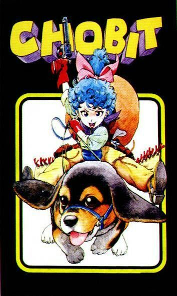

Akira Toriyama (鳥山 明, Toriyama Akira) es un dibujante de manga y diseñador de personajes japonés. Es conocido principalmente por sus obras Dr. Slump y Dragon Ball y por el diseño de personajes de las sagas Dragon Quest y Chrono Trigger. Sus principales influencias fueron Astroboy de Osamu Tezuka, 101 Dálmatas de Walt Disney y, principalmente, Viaje Al Oeste, de Wu Cheng'en. También, se basó en la leyenda china del Rey Mono.
Entró en una Agencia de Publicidad antes de convertirse en mangaka, donde inmediatamente fue contratado después por una empresa de publicidad en Nagoya; trabajó allí durante 3 años, donde siempre tenía que ir vestido de corbata (algo que a él le incomodaba), lo que le quitó el interés, aparte la mala relación con sus jefes fue lo que le condujo a la decisión de renunciar y a dedicarse por completo al manga. Su vida de mangaka empezó con una publicación en Shonen Jump de Shūeisha. Más tarde crearía muchas otras historias para esa revista y, posteriormente recogidas en tomos. Toriyama se hizo inmensamente popular en Japón y en el extranjero gracias a su obra Dragon Ball, la cual ha sido vista por más de tres generaciones a escala mundial.En la primera década del siglo XXI su fama ha decaído debido al menor éxito de sus producciones más recientes.
En Japón, sin embargo, continúa siendo una figura pública y aún vive en Aichi con su esposa e hijos, donde su fama le ha causado algunos problemas, por ejemplo, cada vez que hay rumores de que hará alguna aparición en Tokio, la oficina de gobernación se preocupa porque por lo general multitudes de fans se juntan cerca de su casa para observarlo salir e, incluso, lo acompañan en caravana hasta el aeropuerto.
Algunas de sus primeras creaciones fueron “Wonder Island” (1978) y “Tomato Girl Detective” (1979). Poco después alcanzó el éxito con “Dr. Slump” (1980-1984), un manga con el protagonismo del robot humanoide infantil Arale y el profesor Sembei Norimaki (entre otros muchos peculiares personajes) que conoció también una adaptación televisiva.
Aunque la trascendencia internacional del “Dr. Slump” no debe ser menospreciada, el mayor triunfo como autor de Akira Toriyama es “Dragon Ball” (1984-1995), la historia de Son Goku y su búsqueda legendaria de las bolas del dragón que también encontró enorme resonancia en su versión anime.
Después de “Dragon Ball”, el autor japonés siguió creando nuevos manga, como “Kajika” (1998), “Cowa” (1997-1998) o “Nekomajin” (1999-2005).
También ha puesto su talento en el dibujo y el diseño gráfico para colaborar en la creación de personajes de videojuegos, entre ellos los del célebre “Dragon Quest”.
Respecto a la serie Dragon Ball, esta es una reelaboración de una historia llamada Dragon Boy que habia escrito antes de Dr. Slump. Dragon Ball se volveria bastante popular alrededor del mundo, tanto que la empresa que relaizaba el anime, Toei Animation, intento continuar la serie sin manga de referencia, debido a que Akira se negó a continuar con la historia, aunque les dio el permiso de producir la continuación, lo que daria lugar a Dragon Ball GT, en dude Akira se limitaria a asesorar y diseño de algunos personajes, aunque su opinión pareció positiva ante la serie. Esta serie no fue tan grande como las dos anteriores, pero tuvó exito.

Wonder Island | Publicados en la Weekly Shonen Jump el 25 de enero de 1979. Su historia se desarrolla en una isla donde hay personajes muy extraños, y un piloto llamado Furusu intenta volver a su hogar debido a que sufrió un accidente en avión hace 35 años atrás. Su segunda parte trata del detective Harry, quien viaja a Wonder Island para detener a un ladrón de bancos. |
Today's Highlight Island | One-shot lanzado en abril de 1979. Trata sobre un chico llamado Kanta que siente una pasión desaforada por la comida. Debido a sus excesos, un día le empieza a doler una muela, lo que le obliga a detenerle su afición. Para ayudarlo, su profesora lo envía a la clínica del Doctor Cabra, quien le ayuda a extraer su muela. |

Tomato | One-Shot lanzado en agosto de 1979. Tomato es una mujer policía que empieza a trabajar en una comisaría. Lo que no esperan sus compañeros es que ella es el ser más impuntual y caótico con el que se cruzarán en su vida, aunque también demuestra ser muy eficaz. |
Dr. Slump | La primera serie importante creada por Toriyama que se desarrolló desde 1979 hasta agosto de 1984, publicada por la Shonen Jump en 18 volúmenes. Trata sobre Arale, una chica robot que vive en una Villa con cosas extrañas llamada "Villa Pingüino". |
Escape | One-shot lanzado en enero de 1982. La historia describe la huída de una niña perseguida por un monstruo que, aparentemente, pretende liquidarla. Finalmente resulta que estaban jugando al escondite. |
Pola & Roid | One-Shot lanzado en el Nº17 de Shonen Jump en enero de 1982. Roid es un joven taxista espacial, cuyos servicios son solicitados por una jovencita llamada Pola, originaria de un planeta dominado por una malvada emperatriz. Juntos lucharán para liberarlo. Curiosamente, el Rey Nikochan y su ayudante (de Dr. Slump) hacen cameos en el mismo, ademas de que el principal personaje femenino se asusta al aparecer vestida como Arale Norimaki. |
Pink | Publicado en diciembre de 1982 en el Fresh Jump, trata de una chica llamada Pink que roba agua de una empresa y se enamora del Sheriff. Al final, el Sheriff arresta a los dueños de la empresa porque habían raptado al Dios de la Lluvia para producir agua y después ponerla a la venta. |
Mad Matic | Publicado en diciembre de 1982, consiste en una disparatada historia acerca de un monstruo en una nevera y dos hermanas con curiosos nombres comerciales (Nivea y Muhi), que son ayudadas por un joven que pasa por la calle. |

Chobit | One-shot lanzado en 1983 por Shonen Jump y Fresh Jump. Están protagonizados por una diminuta alienígena llamada Chobit que ayuda al Sheriff de una pequeña ciudad con poderes mágicos. |
Dragon Boy | Esta compuesto por tres capitulos que se empezaron a publicar en agosto de 1983 por la Fresh Jump. Trata de un niño cuyo maestro le encarga la defensa de la princesa del país Ka durante su viaje a dicho lugar, donde en el trayecto se enfrentan a varios enemigos. Se destaca por ser el prototipo de la serie Dragon Ball y por estar basada también en la leyenda del Rey Mono. |
The Adventures of Tongpoo | Publicado en Diciembre de 1983, trata sobre Tongpoo, que gracias a una avería en su nave, es obligado a aterrizar en un extraño planeta. Durante su exploración, encuentra una nave que había salido al espacio dos años antes que la suya. Posteriormente descubre un cadáver humano con un balazo y después a una bonita niña que resulta ser la única superviviente de dicha nave. Ella le cuenta que un alienigena ha asesinado a sus dos compañeros. Tongpoo y la chica buscan al asesino y hacen explotar su nave con él dentro. Finalmente, escapan en la nave de Tongpoo. Destaca por ser un concepto inicial de las Capsulas Hoi Poi, además de ser el prototipo para el segundo capítulo de Dragon Ball. |
Dragon Ball | La serie más conocida por Toriyama, que comenzó en 1984 y terminó al final de 1995 en 42 volúmenes. Basada en la leyenda china del Rey Mono, trata sobre Goku, una persona extraña con cola que recorrerá muchas veces el mundo para reunir las Esferas del Dragón y para hacerse más fuerte. Su predecesor, Dragon Ball Z, se intensa más en la lucha y el drama aunque sigue conservando parte de la comedia que tenia Dragon Ball. |
Mr. Ho | Lanzado por la Super Jump en abril de 1987. Trata sobre un ciudadano llamado Mister Ho, quien sufre una avería en su vehículo mientras pasa por una ciudad del sur. Al preguntar en un bar donde puede conseguir un coche, es expulsado por el camarero. Unos chicos le prometen conseguirle uno a cambio de que Mr. Ho les enseñe a usar armas para defenderse de los asesinatos y robos. Un día raptan a la hermana de uno de los chicos y Mr. Ho la salva. |
Lady Red | Lanzado en abril de 1987 por la Super Jump, trata sobre Lady Red, una policía que intenta librar a su ciudad de la delincuencia. Un día en su trabajo, persigue a un atracador quien la viola y le paga con un fajo de billetes. Vuelve a pasarle lo mismo, donde descubre que se equivoca de profesión y se vuelve prostituta. |
Señorito Kennosuke | Publicado en el numero 38 de la Shonen Jump en 1987, trata sobre Kennosuke, un chico que consigue una cita con una hermosa mujer. Tras consultar con su madre y su amigo Shinobimaru, Kennosuke debe impedir que la cita sea aburrida, así no sería llamado "pelma". Finalmente, en la cita, Kennosuke arranca el automóvil de su padre y, como no sabe conducir, choca. La chica por su parte termina llamandolo pelma. |
Sonchoh | One-Shot lanzado en 1988. El protagonista es el alcalde de una ciudad que se pasa la vida vigilando para que nada malo suceda. Un día, un hombre tira una lata de bebida con una bomba, persigue al hombre y se la entrega. |
Mamejiro | One-Shot lanzado en agosto de 1988. Mamejiro es un niño de seis años traumatizado porque su padre le ha robado su helado favorito. Gracias a esto, decide convertirse en delincuente y vengarse de la sociedad. Para empezar, agrede a un atracador mientras este robaba. Mamejiro se convierte en un héroe y, como recompensa, le regalan una enorme montaña de su helado favorito. |
Karamaru | One-Shot lanzado en febrero de 1989 por la Shonen Jump. Karamaru es un ninja de cuatro años cuya principal ocupación es ir a vender setas al pueblo, ya que su abuelo está enfermo. Un día, caminando en el pueblo, conoce a un hombre que resulta ser ladrón de coches. Ambos son atacados y el hombre cae inconsciente mientras Karamaru vence a los asaltantes. El joven ninja arregla todo para que parezca que el héroe sea el ladrón de autos. |
Wolf | One-shot lanzado en enero 1990 por parte de Akira Toriyama - The World. |
Cashman Saving Soldier | Lanzado en diciembre de 1990 por la Shonen Jump. Trata sobre Jiora, un policía del Planeta Biretejion que, mientras persigue a un criminal de su planeta, acaba estrellándose en la Tierra. Aquí se verá obligado a trabajar como mercenario con el objetivo de conseguir dinero para comprar combustible y volver a su planeta. |
Dub & Peter | Publicado en noviembre de 1992 por la revista Virtual Jump y terminó de publicarse en abril de 1993. Dub es un alegre y regordete personaje convencido de que sus problemas para ligar se solucionarán en cuanto tenga coche. Por ello le pide a un amigo que le cosntruya uno, y el resultado es Peter, un vehículo computerizado ultramoderno. |
Go! Go! Ackman | Publicado por Virtual Jump en julio de 1993. Ackman es un demonio joven de 200 años que acaba de despertar de un letargo de medio siglo el mismo día de su cumpleaños. Se dirige a la Tierra para conseguir almas y venderlas a buen precio, pero tiene un enemigo, un pequeño ángel que intenta detener sus planes. Curiosamente, el nombre Ackman sería reutilizado en Dragon Ball, además de que tiene rasgos físicos muy parecidos a los de Trunks. |
Chotto Kaettekita Dr. Slump | Cuarta secuela del Dr. Slump que se desarrolló entre 1994-1997. Goku hace una aparición en esta serie. |
Tokimecha | Publicado en diciembre de 1996, trata de una chica llamada Tai que viaja en una máquina del tiempo a la prehistoria. La máquina queda destrozada y es entonces cuando a conoce a Muu, un joven cavernícola. Tai descubre que Muu habla su idioma, y este se enamora pensando que Tai es la mujer más fuerte del mundo. A continuación, otros viajeros del tiempo viajan hacia la linea de tiempo de Tai y Muu. Los viajeros secuestran a Meh, una chica cavernícola, con el fin de venderla en el futuro como esclava. Muu y Tai logran rescatarla, y después de esto, Tai roba la máquina del tiempo de los cazadores y vuelve a su época, dejando a los viajeros atrapados en el Tiempo. |
Alien X Peke | Lanzado en 1996 por Shonen Jump. Alien X Peke es un extrarestre que cae accidentalmente a la Tierra. Durante su viaje, se encuentra con Poko, un chico que dice saber donde se encuentra la nave pero que a cambio le ayude a liberarse de Pepero, un terrateniente que les hace la vida imposible a él y a su familia. Peke se enfrenta al terrateniente, mientras el abuelo de Poko destruye su nave, lo que lo obliga a quedarse en la Tierra. |

Bubul | Lanzado en 1997, es protagonizado por un joven mago llamado Bubul, quien vive (junto a los demás) en un mundo donde habitan los animales en vez de los humanos. Bubul y su hermano pequeño Purupuru presencian de la huida de un atracador de bancos llamado Patchi que, para escapar de la policía, atraviesa la puerta que conecta al mundo de los humanos; por lo que los dos hermanos deciden seguirle. Curiosamente, Bubul es igual a Buu Gordo solo que este es azulado en vez de rosa. |
Cowa! | Serie publicada en noviembre de 1997 hasta noviembre de 1998, que trata sobre un mundo donde los humanos y monstruos coexisten. |
Kajika | Publciada entre julio y septiembre de 1998, trata sobre Kajika, un chico que de niño mató a un zorro, y el fantasma de éste lo maldijo. Kajika solo podrá romper la maldición salvando a mil criaturas. |
Neko Majin Z | Una manga de comedia que se desarrolló entre 2000 y 2006. Los personajes de la serie Dragon Ball hacen aparición. |
Sand Land | Una de las últimas obras de Akira Toriyama, publicada en el año 2000. Trata sobre las aventuras de un demonio que se une a un humano en su búsqueda de agua. |
Cross Epoch | One-shot crossover entre Dragon Ball y One Piece de Eiichiro Oda publicado en 2006. |
Dr. Mashirito Abale-chan | One-Shot del antagonista Dr. Mashirito lanzado en 2007. |
Sachi-chan Gū!! | One-shot lanzado en 2008. |
Jiya | Tercera parte del one-shot que funcionó desde 2009 hasta 2010. |
Kintoki | El más nuevo one-shot de Akira Toriyama, lanzado en 2010. |